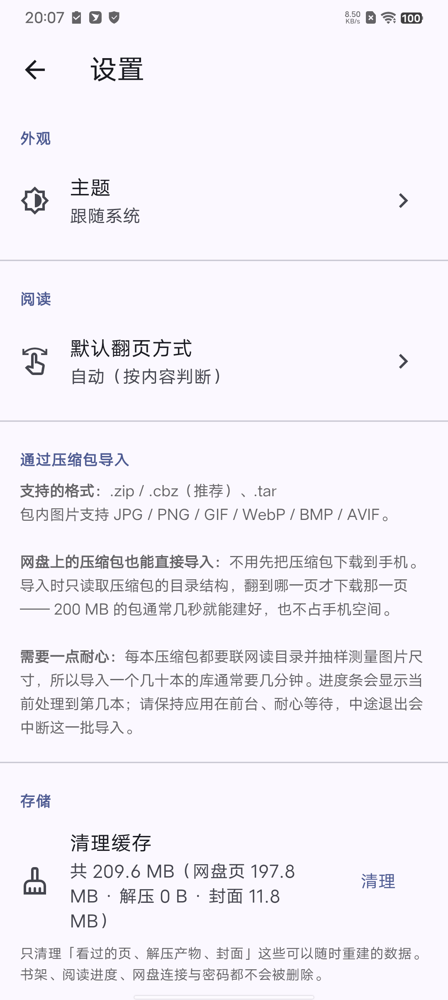
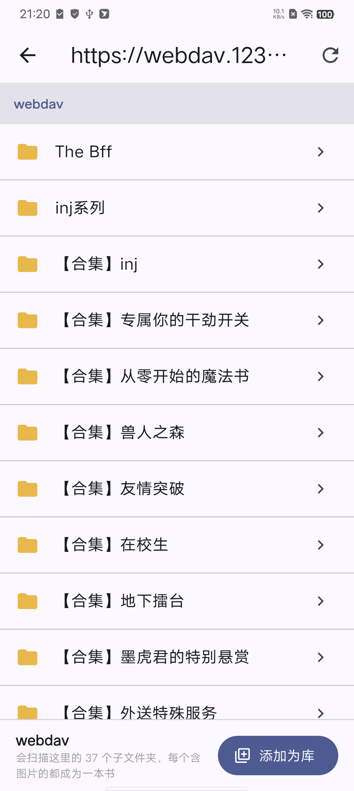
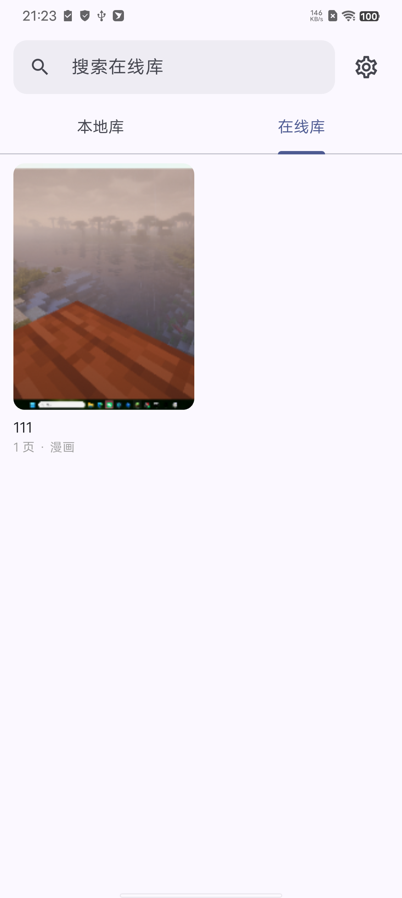

1开始前要准备什么
| 需要 | 说明 |
|---|
| 一个支持 WebDAV 的网盘 |
私有云：飞牛 fnOS、群晖、威联通、TrueNAS
商用网盘：123云盘、坚果云、Nextcloud、Alist |
| 网盘的 WebDAV 地址 |
形如 https://webdav.123pan.cn/webdav |
| WebDAV 账号和密码 |
有些网盘要单独生成，不是登录密码 |
| 手机能上网 |
同一局域网更快；在外网需要用隧道或公网访问 |
关于商用网盘
百度网盘、阿里云盘这类网盘本身不提供 WebDAV。
想用它们，需要先用 Alist 之类的网关把网盘挂载并转成 WebDAV，
再把 Alist 的 WebDAV 地址填进 inkScroll。
inkScroll 这边不限服务商，只要是标准 WebDAV 就能连。
2在网盘端开启 WebDAV
以 123云盘 为例（需要会员）：
- 登录 123云盘网页版，进入「设置 / 开放服务」相关页面
- 找到 WebDAV，点击开启
- 系统会给你三样东西，全部记下来：
- 服务器地址：
https://webdav.123pan.cn/webdav
- 账号（通常是手机号）
- 一串单独的 WebDAV 密码 —— 这个不是你的登录密码
飞牛 fnOS 用户
在「设置 → 文件共享协议 → WebDAV」开启，地址是
https://你的NAS地址:5006。注意两点：
① 建议单独建一个只读账号专门给阅读器用；
② 账号需要有可见文件夹，否则连接成功但目录是空的。
3在 App 里添加 WebDAV 库
- 打开 inkScroll，点右上角的 齿轮图标进设置
- 找到「在线库（WebDAV 网盘）」，点 添加 WebDAV 库
- 填写三个字段：
| 字段 | 填什么 |
|---|
| 服务器地址 | https://webdav.123pan.cn/webdav
只填 域名:端口 也行，http/https 会自动识别 |
| 账号 | 你的网盘账号 |
| 密码 | WebDAV 单独生成的那串密码 |
- 如果网盘用的是自签名证书（家用 NAS 常见），打开
「允许自签名证书」 开关
- 点 测试并连接

设置页：阅读 / 通过压缩包导入 / 存储 / 在线库
连上了会看到什么
顶部显示服务器地址，下面列出网盘里的文件夹和文件。
底部有一条提示，写着「会扫描这里的 N 个子文件夹」。
4整理漫画目录（重要）
导入时 选中的目录会被当成"书架根目录"，它下面的每一个单位都会变成一本书。
推荐两种组织方式，任选其一：
方式 A：一话一个文件夹（图片摊开）
漫画根目录/
├── 第01话/ 1.jpg 2.jpg 3.jpg …
├── 第02话/ 1.jpg 2.jpg 3.jpg …
└── 第03话/ 1.jpg 2.jpg 3.jpg …
方式 B：一话一个压缩包（推荐，很多网盘都是这样）
漫画根目录/
├── 第01话.zip
├── 第02话.zip
└── 第03话.zip
压缩包不用下载到手机
inkScroll 会直接读取网盘上压缩包的目录结构，翻到哪一页才下载那一页。
200 MB 的压缩包通常几秒就能建好，也不会占用手机存储。
支持 .zip / .cbz / .tar。
不要选太上层
如果你选的是网盘根目录，而根目录下有几百个不相干的文件夹，
扫描会很久，还会把不相关的东西也导进来。选到「漫画」这一层就好。
5选目录并开始导入
- 在目录列表里点进「漫画根目录」
- 底部出现两条信息：
- 当前路径
- 「会扫描这里的 N 个子文件夹，每个含图片的都成为一本书」
- 点右下角 添加为库
- 等待扫描 + 导入（下一步详细说）

浏览网盘目录：点进漫画根目录，再点右下角「添加为库」
6导入要等多久，为什么要等
进度条会显示「正在导入 12/120：第12话.zip」这样的信息。
一个几十本到一百多本的库，通常需要 几分钟。
时间花在这两件事上，都必须在网盘上完成：
| 阶段 | 在做的事 | 说明 |
|---|
| 扫描目录 | 列出每个子目录的内容 | 并行 5 路请求，能省掉大部分等待 |
| 测量尺寸 | 每本抽 4~6 张图，只下载图片头部几十 KB | 为了翻页时页面高度不跳动 |
导入期间请保持 App 在前台
中途切走应用或息屏，这一批导入会被中断。
已导入的书会保留；重新点「添加为库」会跳过已经在库里的，继续导剩下的。
怎么知道导完了、有没有失败
导入结束后，设置页的在线库下方会显示一行「上次导入：…」，
里面有扫描到多少、成功多少、失败多少。失败的话第一条原因也会写在这里。
7开始阅读
- 回到首页，切到 在线库 标签
- 书墙里能看到刚才导入的书，封面取的是第一张图片
- 点开就能看

在线库：封面自动取自每本书的第一页
直接从网盘压缩包里读出的页面，翻到哪页拉哪页
看过的页会自动缓存
翻过的页面会存到手机本地，再翻回去不用联网，也不重复消耗流量。
缓存可以在「设置 → 存储 → 清理缓存」里清掉。
8相关设置
| 设置项 | 作用 |
|---|
| 阅读 → 默认翻页方式 |
自动（长条图用上下滑动、普通页用左右翻页）/
左右翻页 / 上下滑动。
只影响没读过的书，读过的书会记住你上次用的方式。 |
| 存储 → 清理缓存 |
显示当前缓存占用（网盘页 / 解压产物 / 封面三类），可一键清理。
只清缓存：书架、阅读进度、网盘连接和密码都不会被删除。 |
| 在线库 → 不在家时怎么连 |
外网访问的两种方案：公网 IP + 端口映射，或内网穿透隧道。 |
隐私说明
导入的漫画、解压产物、缓存全部存放在应用的私有目录里，
并写入了 .nomedia 标记，不会出现在系统相册中。
9常见问题
提示「用户名或密码不正确」
说明网络是通的，只是认证没过。常见原因：
- 填的是登录密码而不是 WebDAV 单独生成的密码
- 账号名填错（有的 NAS 用登录名而不是显示昵称）
- 网盘禁用管理员账号走 WebDAV —— 换一个普通账号试试
连上了，但目录是空的
多半是这个账号没有任何可见文件夹。到网盘/ NAS 的权限设置里，
给这个账号分配一个目录的读取权限。
提示「连接不上服务器」
- 地址是否少了
https:// 或端口号
- 手机和 NAS 是否在同一个局域网
- HTTPS 用的是自签名证书 → 打开「允许自签名证书」
导入很慢 / 中途停了
- 正常现象：每本都要联网读目录，几十本就要几分钟
- 保持 App 在前台，别切走
- 重新点「添加为库」会跳过已导入的书，继续导剩下的
压缩包打不开 / 显示 0 页
- 确认是
.zip / .cbz / .tar
- 加密（带密码）的压缩包不支持
.tar.gz 不支持在线读取（它必须从头顺序解压，
无法随机取单片），请先转成 zip